Water Usage Tracker
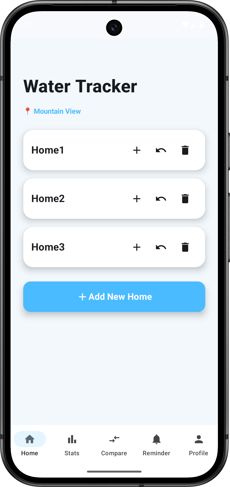
Reflection: Lab 1 introduced the fundamentals of Jetpack Compose layouts. I learned how to use Column, Row, Box, Card and Image components to design structured and responsive user interfaces.
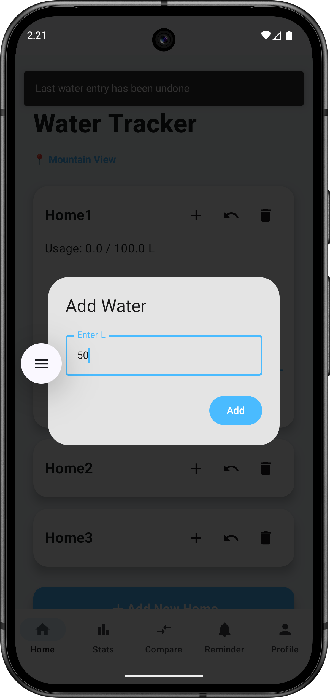
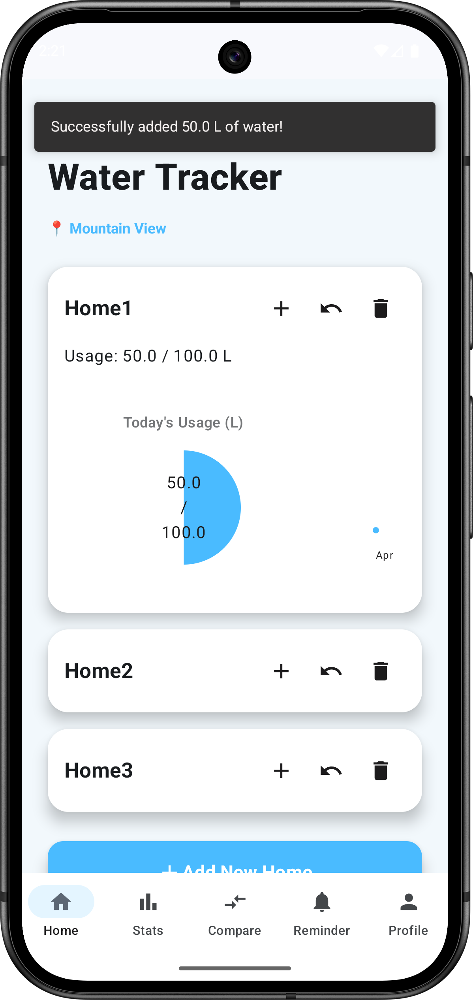
Reflection: This lab helped me understand state management using TextField, Button and mutableStateOf. User actions could dynamically update the UI and provide real-time feedback.
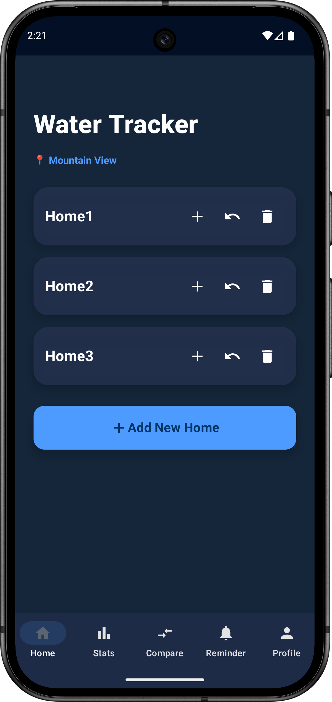
Reflection: I explored Material Design principles including themes, typography, colours and cards. This improved the visual consistency and usability of the application.
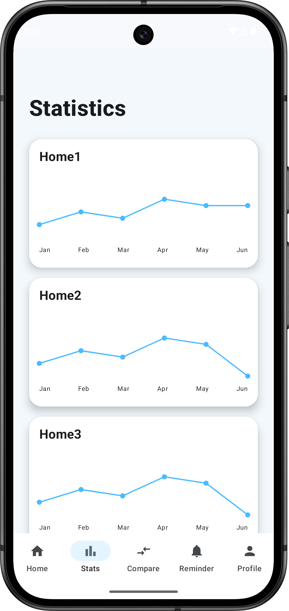
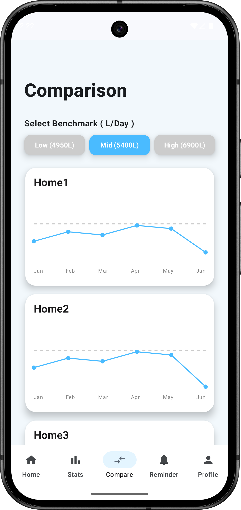
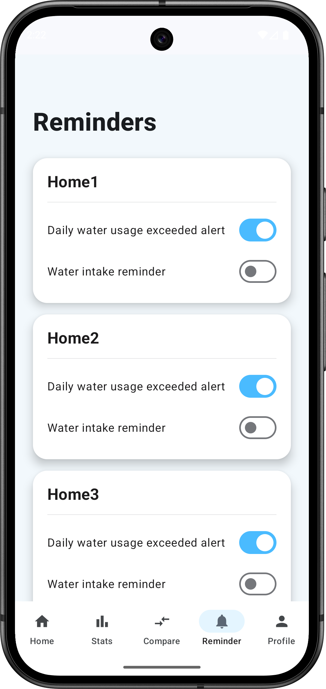
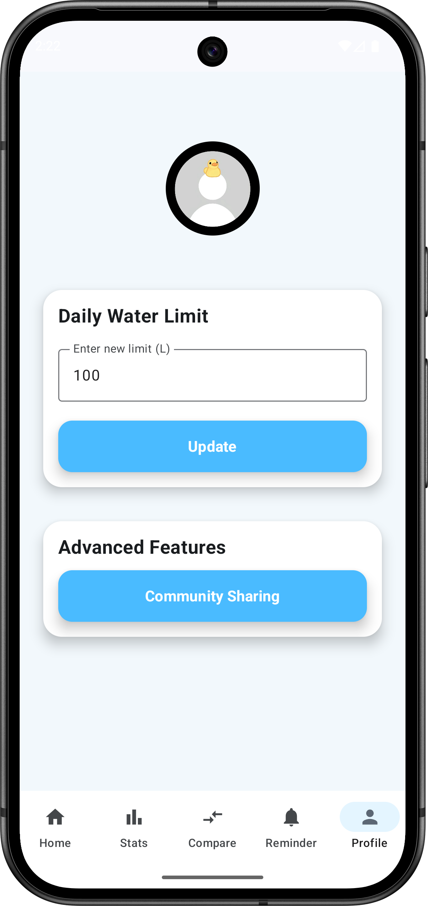
Reflection: I implemented Navigation Compose and ViewModel architecture to support multiple screens while maintaining shared application state.
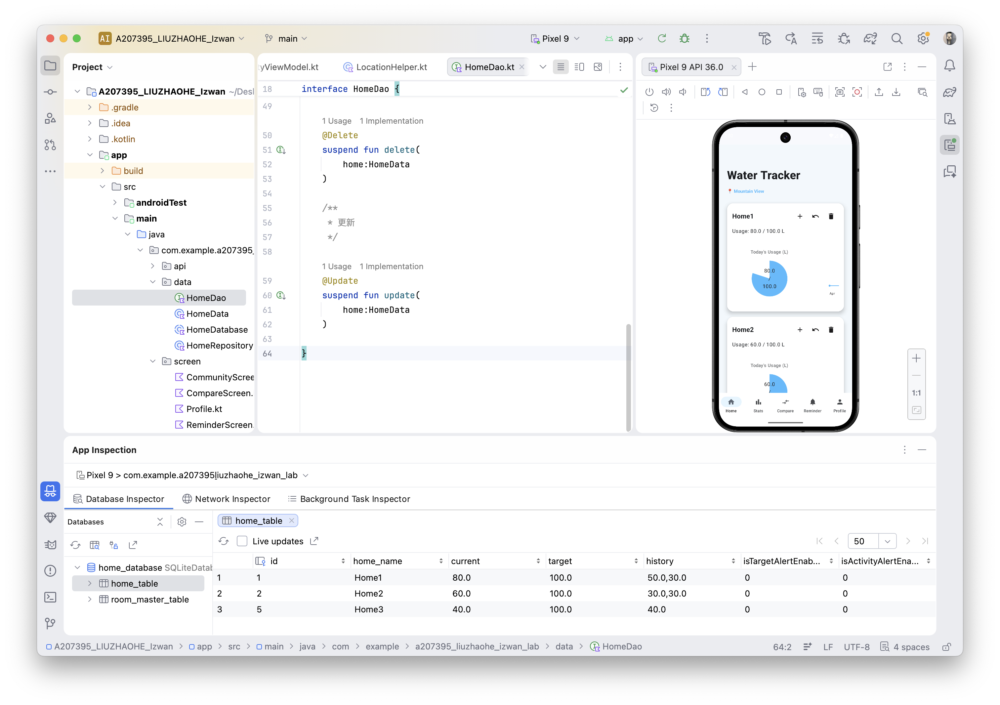
Reflection: Room Database enabled persistent storage of user data. I learned how Entity, DAO and Repository components work together to support offline data management.
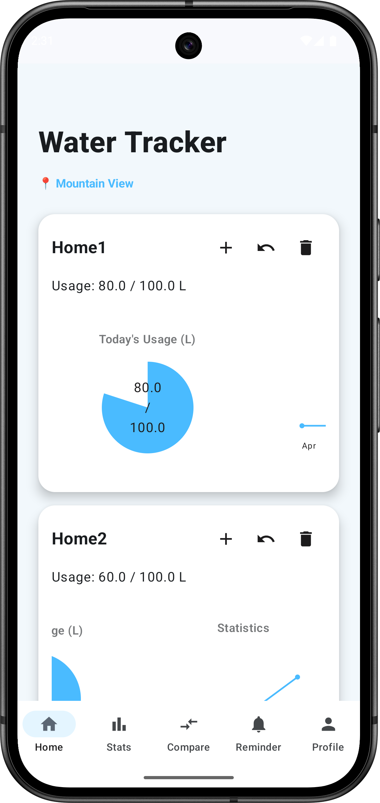
App Name: Water Usage Tracker
Problem Statement: Many households do not actively monitor their daily water consumption. Without proper tracking, excessive water usage can occur without users noticing. The application helps users record, analyse and improve water usage habits.
Lessons Learned: Project 1 strengthened my understanding of Navigation Compose, ViewModel state management, chart visualisation and multi-screen application architecture.
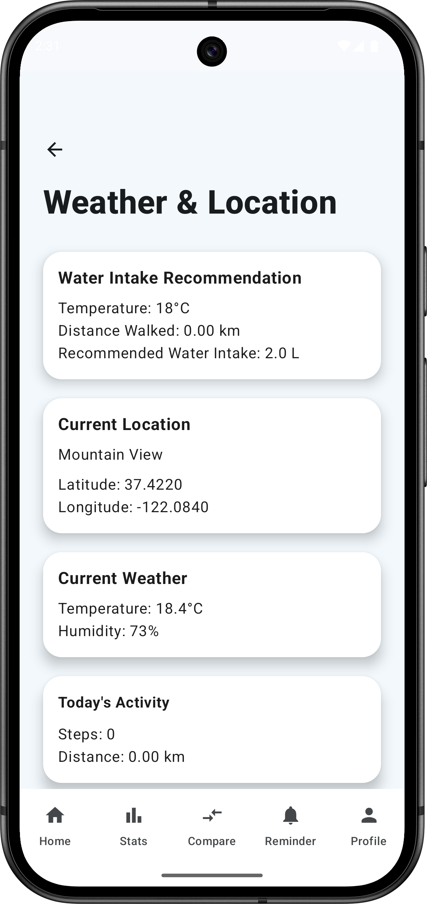
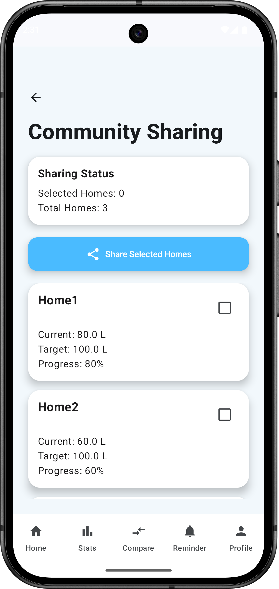
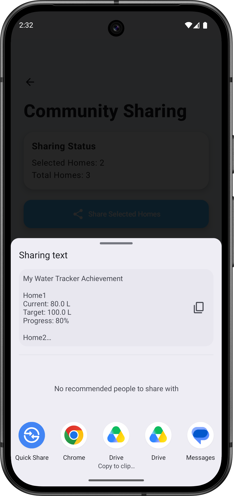
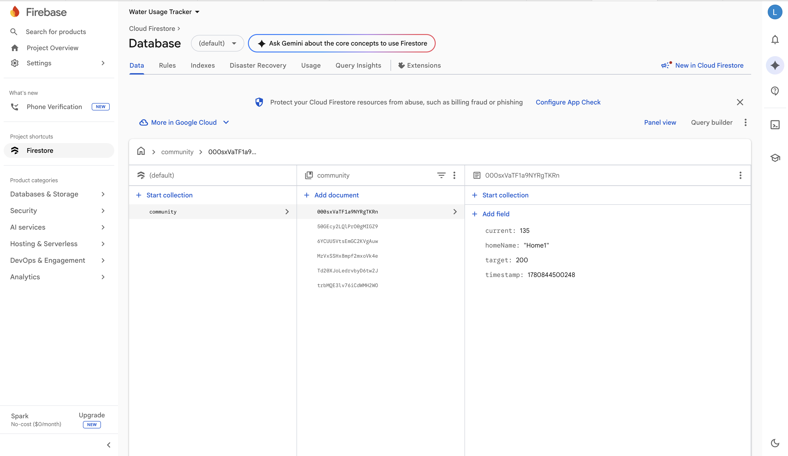
App Name: Water Usage Tracker
Problem Statement: Water conservation requires accurate monitoring, environmental awareness and community participation. Traditional tracking systems rarely provide personalised recommendations or collaborative engagement.
Features:
Lessons Learned: This project strengthened my understanding of Room Database, Firebase Firestore, REST APIs, hardware sensors and MVVM architecture. Integrating multiple technologies into one application improved both my technical and problem-solving skills.
From Lab 1 to Project 2, I progressed from creating simple Jetpack Compose interfaces to developing a complete Android application integrated with Room Database, Firebase Firestore, Weather API and hardware sensors.
One of the biggest challenges was integrating multiple technologies while maintaining a clean architecture. Through continuous testing and debugging, I improved both my technical knowledge and problem-solving abilities.
This project demonstrates how software engineering can contribute to SDG 6 by encouraging responsible water usage and promoting sustainable behaviour within communities.
Kotlin, Jetpack Compose, Material Design, Navigation Compose, ViewModel, Room Database, Firebase Firestore, Retrofit, REST API, GPS Location, Step Counter Sensor, MVVM Architecture, Android Studio and GitHub.
Android Developers Documentation, Jetpack Compose Documentation, Firebase Documentation, Retrofit Documentation, Weather API Documentation, Google Location Services Documentation, ChatGPT (learning assistance and code explanation).